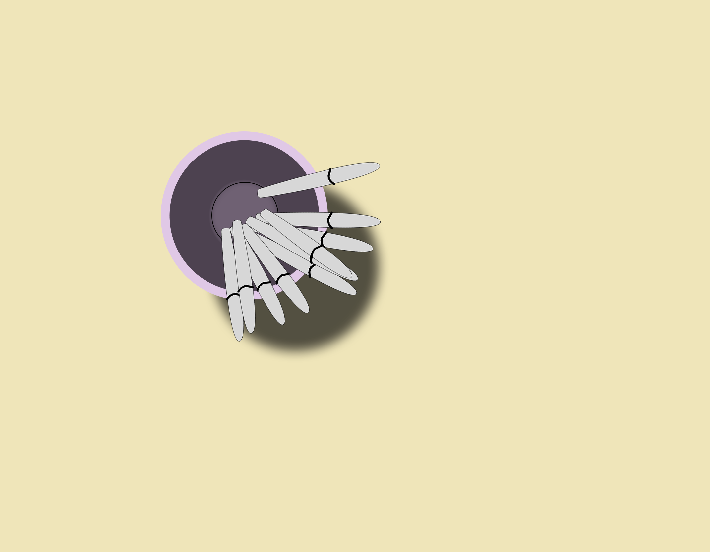
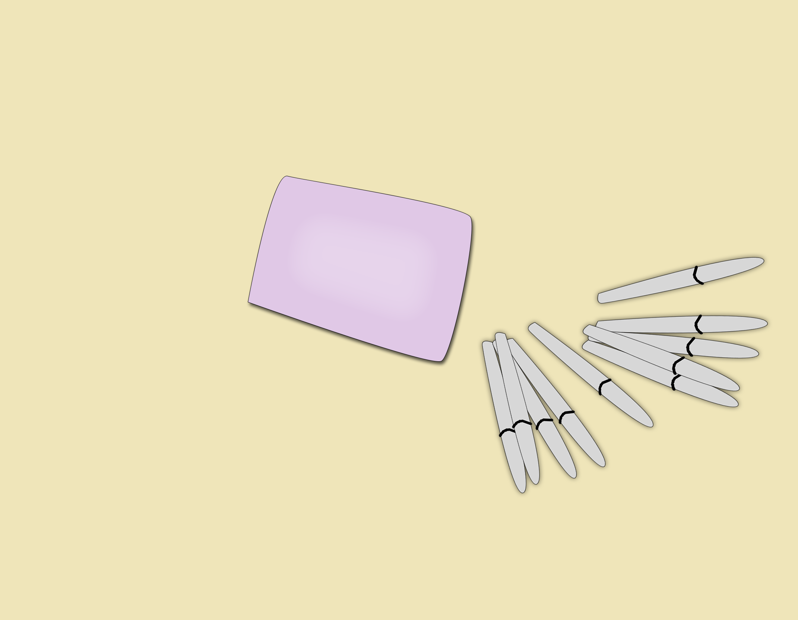
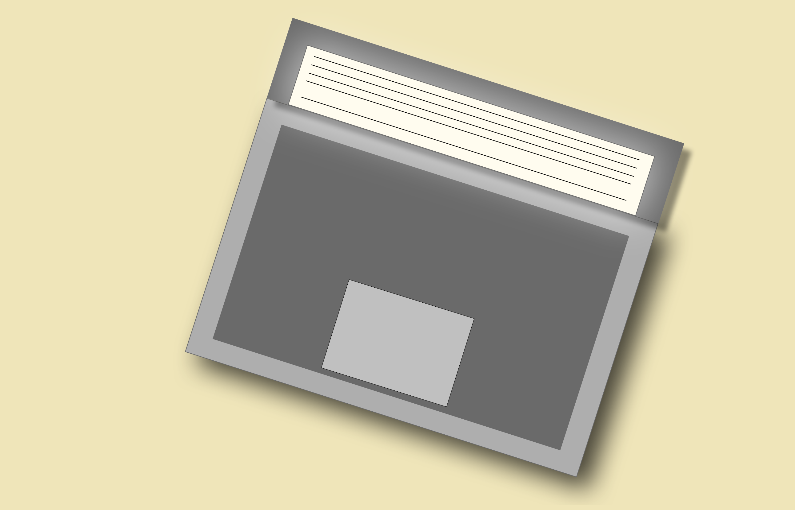
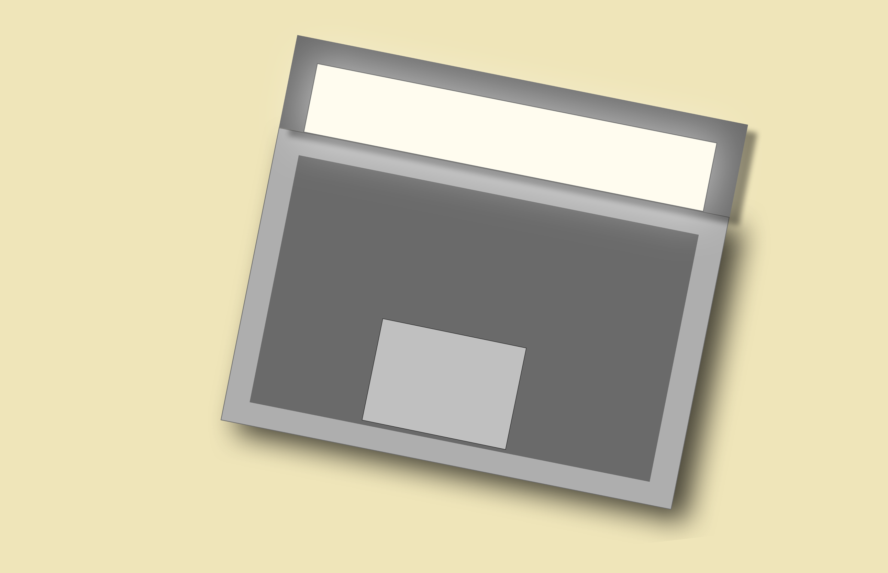
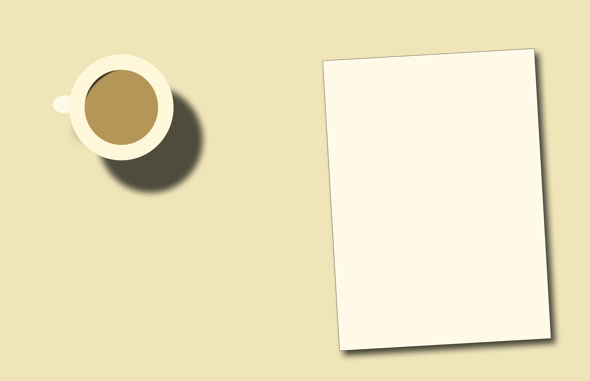
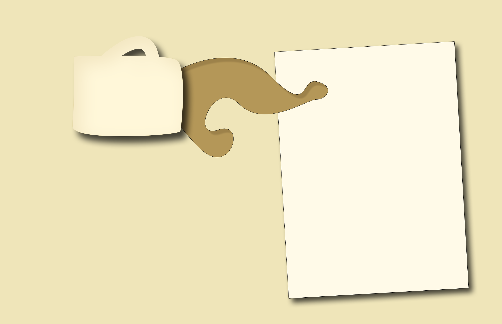
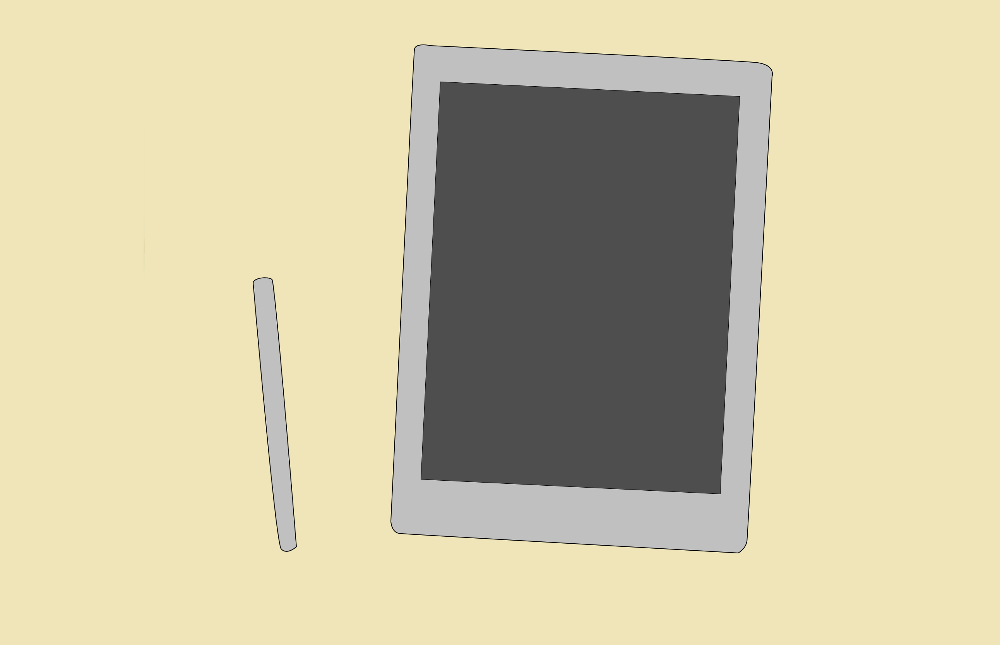
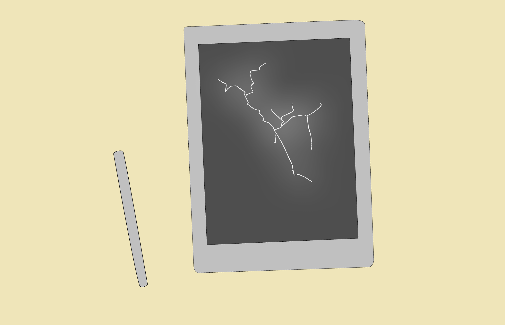

<!DOCTYPE html>

<html lang="en">
    <head>
        <meta charset="utf-8" name="viewport" content="width=device-width, initial-scale=1.0">
        <link rel="stylesheet" href="style.css">
        <script src="script.js"></script>
        <title>Chloe Rankin Final Assignment INT-MEDIA</title>
    </head>
</html>
<!--The metaphor for my website is "the eyes of a cat" as presented in my speech. I did 
change from my original design (as discussed in the CSS notes) as I felt being atop a desk 
did more to indicate that the perspective was through the eyes - literally - of a cat.

For the content of the buttons, I decided to implement a cat's personality rather than have the 
buttons be generic in nature. I wanted the personality of a cat to shape the experience, with the ultimate
goal of making the objects appear as they would to a cat rather than to a human.-->

<!--"How would a cat want to interact with this object?"-->

<!--Images that make up the desk. I will use Javascript & CSS to replace the image "onclick"-->
<body>
    <div class="the-title">
        <h1>The human desk</h1>
    </div>
    <div class="sub-title">
        <h2>...through the eyes of a cat!</h2>
    </div>

    <div class="wrapper">
        <div>
            
            <button onclick="myFunction2()" type="button" id="interact-pens">Dismantle</button>
             
        </div>
        <div>
            
            <button onclick="myFunction3()" type="button" id="interact-laptop">Sabotage?</button> 
            
        </div>
        <div>
            
            <button onclick="myFunction()" type="button" id="interact-coffee">Inspect?</button>
            
        </div>
        <div>
            
            <button onclick="myFunction1()" onclick="playAudio(snd/cat-purr.mp3)" type="button" id="interact-w-pen">Create art?</button>
            
        </div>
    </div>

    <div id="purr-pause">
        <input type="button" id="purr-button" value="speak!" src="/snd/cat-purr.mp3" onclick="audio.play()">
        <input type="button" id="purr-stop" value="shhh" src="/snd/cat-purr.mp3" onclick="audio.pause()">
    </div>
    
    <div id="copyright">
        <p>(C)Youtube Audio Library</p>
    </div>
    

   
</body>